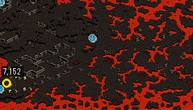
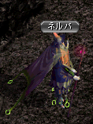
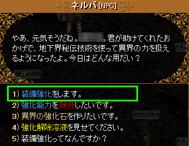
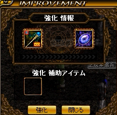
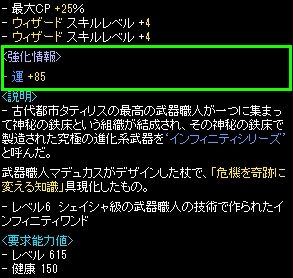
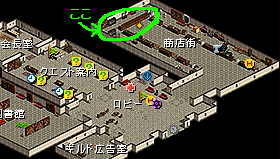

１．ブラックファイヤー装備強化（ＢＦ強化）とは
◆別系統で新しくオプションが１つつく
２０１６年５月２４日アップデートにより実装された、
装備にOPを新しく１つ増やせる機能。
成功率１００％で、何のOPがつくかはランダム。
OPの詳細は下記参照。
BF強化OP一覧
| オプション名称 |
下級 |
中級 |
上級 |
最上級 |
| 力増加 |
５０〜７７ |
７０〜１１５ |
１１６〜１４０ |
１４１〜１５０ |
| 敏捷増加 |
５０〜７７ |
７０〜１１５ |
１１６〜１４０ |
１４１〜１５０ |
| 知識増加 |
５０〜７７ |
７０〜１１５ |
１１６〜１４０ |
１４１〜１５０ |
| 知恵増加 |
５０〜７７ |
７０〜１１５ |
１１６〜１４０ |
１４１〜１５０ |
| 健康増加 |
５０〜７７ |
７０〜１１５ |
１１６〜１４０ |
１４１〜１５０ |
| カリスマ増加 |
５０〜７７ |
７０〜１１５ |
１１６〜１４０ |
１４１〜１５０ |
| 運増加 |
５０〜７７ |
７０〜１１５ |
１１６〜１４０ |
１４１〜１５０ |
| ダメージ増加（％） |
２５〜３３ |
３４〜４２ |
４３〜５０ |
５１〜５５ |
| 魔法ダメージ増加（％） |
２５〜３３ |
３４〜４２ |
４３〜５０ |
５１〜５５ |
| ターゲットの魔法抵抗力弱化（％） |
５〜７ |
８〜１１ |
１２〜１４ |
１５〜１７ |
| 最小攻撃力増加 |
３〜４ |
５〜６ |
７〜８ |
９〜１０ |
| 最大攻撃力増加 |
５〜８ |
９〜１２ |
１３〜１７ |
１８〜２０ |
| 防御力増加 |
５〜７ |
８〜１０ |
１０〜１２ |
１３〜１５ |
| 防御力増加（％） |
１０〜１６ |
１７〜２２ |
２３〜３０ |
３１〜３５ |
| ＨＰ増加 |
１００〜１４０ |
１４１〜１８５ |
１８６〜２４０ |
２４１〜２５０ |
| ＨＰ増加（％） |
２５〜３２ |
３３〜４０ |
４１〜４８ |
４９〜５５ |
| ＣＰ増加 |
１００〜１４０ |
１４１〜１８５ |
１８６〜２４０ |
２４１〜２５０ |
| ＣＰ増加（％） |
１０〜１６ |
１７〜２２ |
２３〜３０ |
４９〜５５ |
| 致命打発動確率増加（％） |
１〜２ |
３ |
４ |
５ |
| 強打発動確率増加（％） |
１〜２ |
３ |
４ |
５ |
| 攻撃速度増加（％） |
７〜９ |
１０〜１２ |
１３〜１５ |
１６〜１７ |
| 移動速度増加（％） |
５〜８ |
９〜１２ |
１３〜１７ |
１８〜２０ |
| 回避率（％） |
１ |
２ |
３ |
４ |
| 命中率（％） |
１〜２ |
３ |
４ |
５ |
| 与えたダメージＨＰ吸収（％） |
１〜２ |
３ |
４ |
５ |
| 与えた魔法ダメージＨＰ吸収（％） |
１〜２ |
３ |
４ |
５ |
| ボーナスＣＰ獲得（％） |
１〜２ |
３ |
４ |
５ |
| 移動時減少ＣＰ |
５〜１１ |
１２〜１７ |
１８〜２２ |
２３〜２５ |
| ポーション回復速度増加（％） |
５０〜６４ |
６５〜７９ |
８０〜９５ |
９６〜１００ |
| 魔法アイテムドロップ率増加（％） |
１０〜１３ |
１４〜１７ |
１８〜２２ |
２３〜２５ |
| スキルレベル増加 |
１〜２ |
３ |
４ |
５ |
| 被ダメージ反射（％） |
１０〜１３ |
１４〜１７ |
１８〜２２ |
２３〜２５ |
| 被魔法ダメージ吸収（％） |
５〜７ |
８〜１０ |
１０〜１３ |
１４〜１５ |
| 被ダメージＣＰ転換（％） |
１〜２ |
３ |
４ |
５ |
| ダブルクリティカルダメージ増加（％） |
１〜２ |
３ |
４ |
５ |
| クリティカルダメージ増加（％） |
１〜２ |
３ |
４ |
５ |
◆ＢＦ強化が出来るようになるためには、前提クエをクリアする必要がある
Lv７５０以上のキャラが、前提クエ「
反撃の始まり」をクリアする事で強化を行えるようになる。
強化が出来ないアイテムは
指・刺青類・補助武器（盾・矢・弾丸など）。
それ以外の装備可能なアイテムは強化出来る。
NxUはもとより、SU、U、レア、さらにはノーマルのアイテムも強化出来る。
また、
インフィニ、６８０賭博武器、DS武器なども
強化を行う事が出来る。
その他、気がついた事など以下にメモ書きする。
・すでに付いているＯＰや、Ｎｘ、開放スロットの状態は維持される。
・付けられる強化ＯＰは１つまで。
既に強化ＯＰが付いたものに再度強化を行うと、強化ＯＰが上書きされる。
◆同系統のＢＦ強化ＯＰは２つまで有効
たとえば、「スキル＋○」のＢＦ強化ＯＰがついた装備を３ヶ所以上つけても、
有効なのは２つまで、という意味であると推測される。
同系統のOPが３ヶ所以上着いている場合、
優先的に２ヶ所が選択される。
優先順位は装備の部位により決まっており、以下の通りである。
１．基本武器
２．補助武器
３．鎧
４．手
５．頭
６．背、耳
７．首
８．腰
９．足
１０．指
◆ＢＦ強化したアイテムは鏡や巨匠が出来なくなる
強化ＯＰを削除すると、（もともと鏡可能なアイテムであれば）また鏡や巨匠が出来るようになる。
この性質があるため、
強化は
１）もともと鏡が出来ない装備（∞、ＮｘＵ、６８０武器など）
２）鏡または巨匠が出来なくなっても問題ない装備
に対して行うとよい。
・ＯＰを削除したい場合は、ネルバから１０万Ｇで「強化解除溶液」を買い使用。
◆強化補助アイテムは３種類
強化補助アイテムは以下の３種類ある。
・虹色の鍛冶屋の鋏
種類を変えないまま、等級だけをランダムに変える。
同じ等級になる場合もある。
・虹色の鍛冶屋のハンマー
等級を変えないまま、種類だけをランダムに変える。
同じ種類になる場合もある。
・虹色の鍛冶屋の鉄床
高い等級のオプションが着く確率が上がる。
２．ブラックファイヤー装備強化の仕方
まず、ブラックファイヤー外郭へ行く。
行き方は、ボルティッシュから走りで。詳しくは
こちらを参照。
ブラックファイヤー外郭の一番左下付近（７，１５２）にいる
ＮＰＣ「ネルバ」に話しかけ、
ブラックファイヤー装備強化を出来るようにするための
前提クエ「反撃の始まり」をクリアする。
前提クエの内容は
こちらを参照。
 
前提クエをクリア後、ネルバに話しかけると、以下のメニューが表示され、ブラックファイヤー装備強化が出来るようになる。

１を選択して強化を依頼すると、以下の強化画面が開く。

左に強化したいアイテム、右に異界の強化石、さらに必要な場合は、下に強化補助アイテムをセットし、「強化」ボタンを押して強化を行う。
成功率は１００％で、強化を行うと以下のような形で
強化ＯＰが新しく１つ付く。
付くＯＰの種類と数値はランダム。一覧は
こちらを参照（公式サイト）。

３．異界の強化石の入手方法
異界の強化石を入手するには、以下の３つの方法がある。
１．ブラックファイヤークエをクリア
前提クエ含めて全部で６つあり、それぞれクリアすると１つずつもらえる。
２．冒険団顧客ランクを上げ、冒険団コインで交換
古都冒険者協会に入り、右奥「商店街」の一番奥にいるコイン商人ペルに話しかける。

「２．冒険団顧客ランクを上げたいです。」を選び、冒険団コイン３０枚を使って顧客ランクを３まで上げる。
顧客ランクを３に上げる事により、以降
冒険団コイン７枚で異界の強化石１つと交換してもらえる。
冒険団コインはレポートクエで計３８枚手に入る。
また、
協会任務担当官から受けられる 「１日デイリークエスト」と「懸賞付き指名手配」で１日２枚ずつ手に入れる事が出来る。
地道にこなしていくとよいだろう。
３．ネルバに話しかけて作成
ネルバに話しかけ、「３．異界の強化石を作りたいです。」を選ぶ事で作成可能。
異界の強化石を１つ作るのに、
神秘の石２０個、共鳴石３個、炎の石１個、深淵の黒曜石１０個、１００万Ｇ が必要。